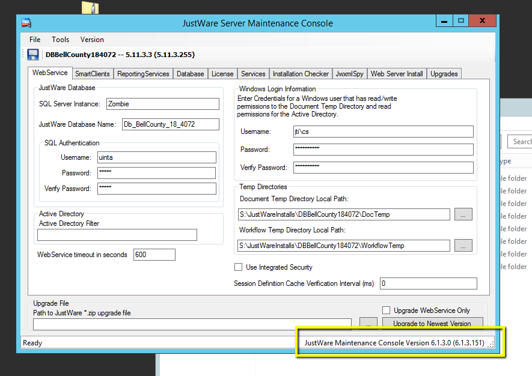
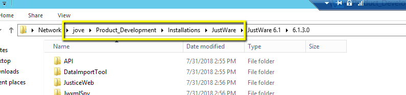
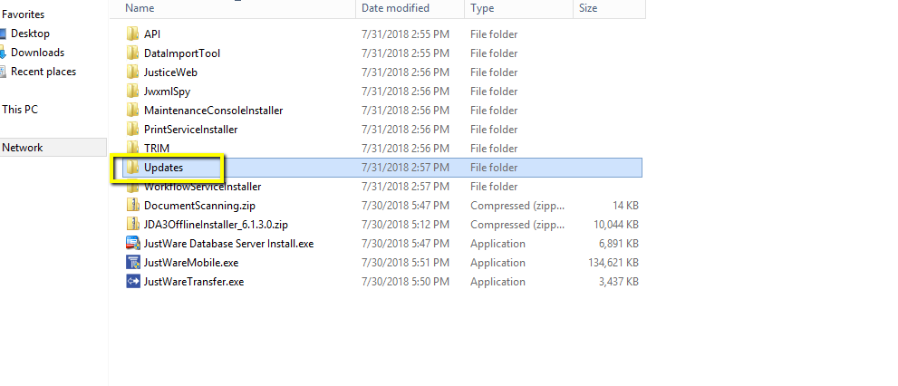
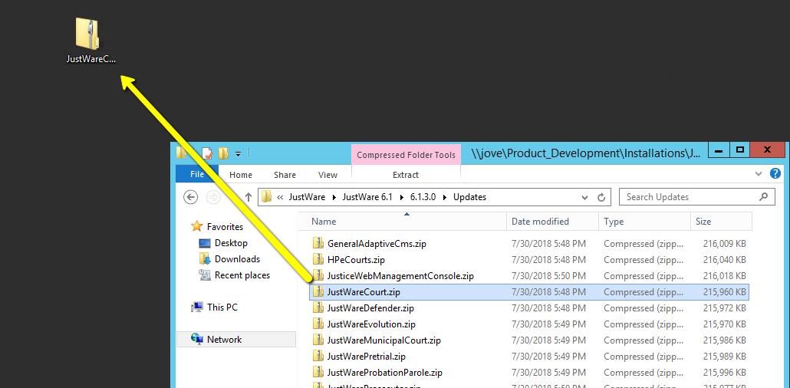
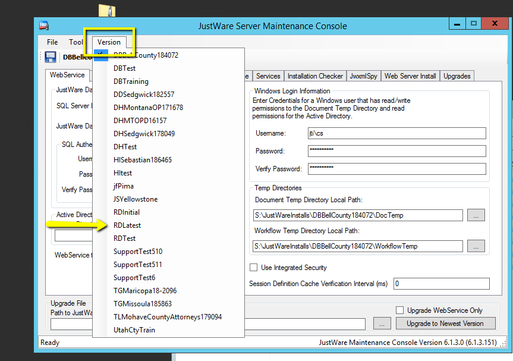
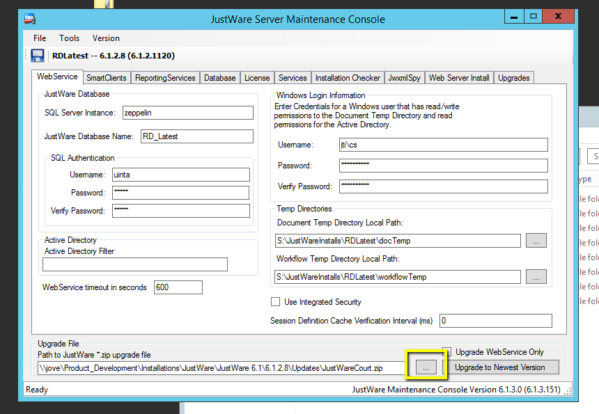
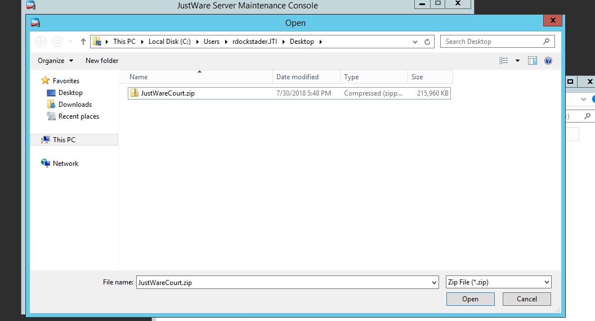
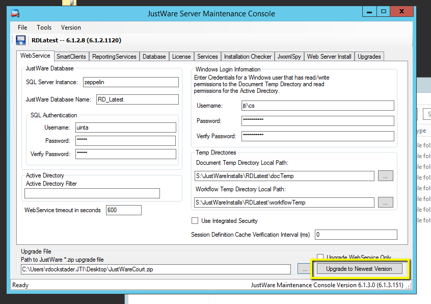
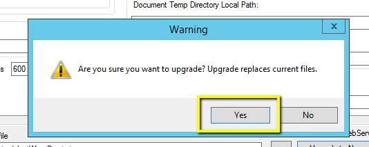
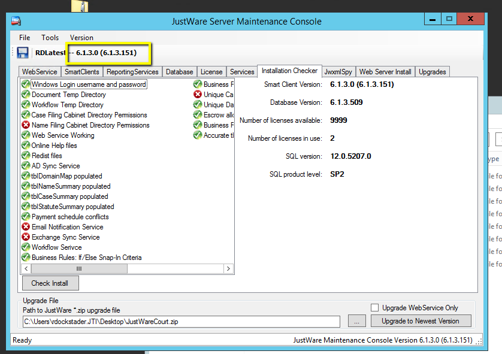

How to Upgrade an instance of a JustWare install
First Verify the Maintance Console is on the version you need to upgrade to. If not, click Here for instructions on how to upgrade/downgrade the JustWare Maintance Console (JWMC)
One the JustWare Maintance Console is on the correct version, Navigate to \\jove\Product_Development\Installations\JustWare\ and find the JustWare version that matches your database
Open the Updates folder, and choose any of the .zip files there
Copy the file to your desktop
Click the version dropdown, and select the version you want to upgrade
Open the JWMC and select the ... in the bottom right corner, in the upgrade file section
Select the .zip you moved from Jove
click upgrade to newest version
select yes on the prompt
After the JWMC becomes responsive again, your environment should report the new version
